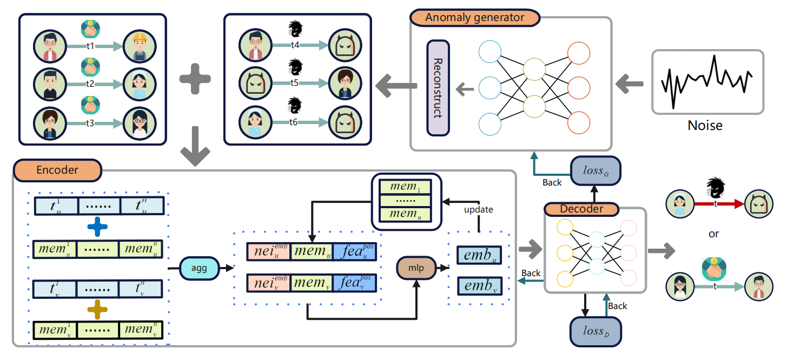
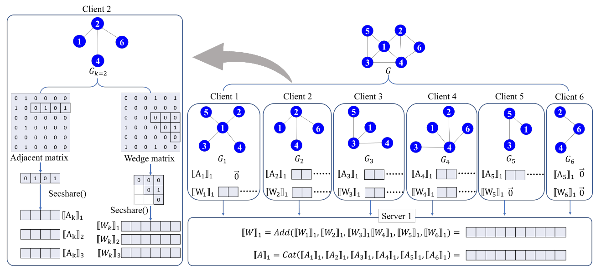
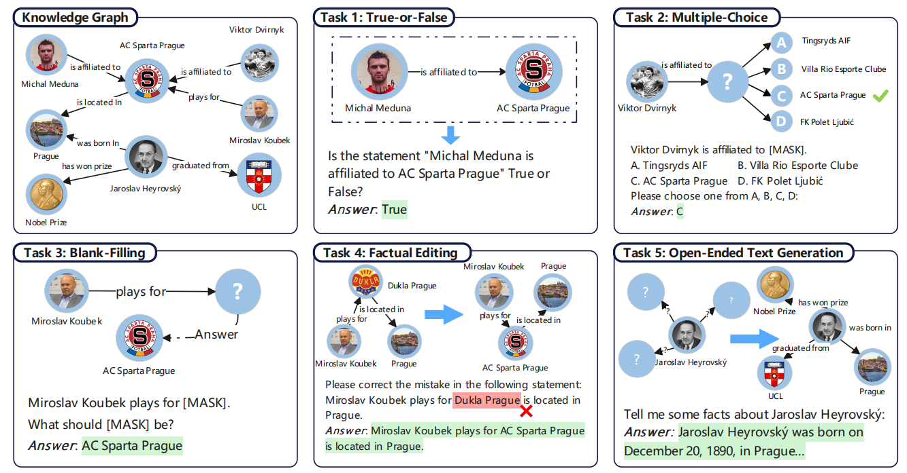

{kind=link}
Research |
|

|
GADY: Unsupervised Generative Anomaly Detection in Dynamic Graphs
Shiqi Lou, Qingyue Zhang, Shujie Yang, Yuyang Tian, Zhaoxuan Tan, Minnan Luo arXiv preprint. 2023. We propose GADY, an Unsupervised Generative Anomaly Detection in Dynamic Graphs to generate diverse and high-quality negative samples and use continuous dynamic methods to boost detection performance. |
|

|
Counting Edges, Wedges, and Triangles over Fully Distributed Graphs with Distributed Trust
Pinghui Wang, Dongxu Zeng, Shiqi Lou, Haoxin Wang, Tao Qin, TDSC under review We novelly introduce secure multi-party computation (MPC) protocols to effectively count edges, wedges, and triangles in fully distributed graphs. These protocols can safeguard against differential attacks while preserving the privacy of individual nodes' connections. |
|

|
KGQUIZ: Evaluating the Generalization of Encoded Knowledge in Large Language Models
Yuyang Bai, Shangbin Feng, Vidhisha Balachandran, Zhaoxuan Tan, Shiqi Lou, Tianxing He, Yulia Tsvetkov arXiv preprint 2023. We propose KGQUIZ, a benchmark to comprehensively probe the knowledge generalization abilities of LLMs. |
Education |
 |
Xi'an Jiaotong University
2020.09 - 2024.07 B.E. in Computer Science and Technology GPA: 87.7 (+5) / 100.0 [top 5%] Advisor: Prof. Minnan Luo A.B. in Economics China Construction Bank Fintech Elite Class |
Honors&Awards |
|
|
|
Template courtesy: Jon Barron. |